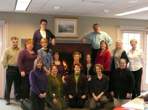

Outcomes Circle
OC program heads enjoy an April 1 snow storm in Ashland, Mass.
As a strategy for developing teaching resources and activities that are both effective and relevant, the National Interpreter Education Center established a collaboration of interpreting education programs to serve as a learning laboratory known as the Outcomes Circle (OC). As “first implementers,” OC programs will participate in an evaluation effort to document outcomes and impact of these initiatives:
Curricular Resources: With the assistance of the Outcomes Circle, the NIEC developed six classroom infusion modules. These “special topics” modules consist of of assessments, readings, lectures, and additional resources in a 6-hour (and often more) package. Topics include: DeafBlind Interpreting, Deaf Interpreter-Hearing Interpreter Teams, Healthcare Interpreting, Social Justice, and Interpreting in Vocational Rehabilitation Settings. All materials are available free of charge. To access the modules, click here.
Professional Development Opportunities: Based on faculty interest and needs, professional development training will be offered to OC program faculty and administrators. Topics may include a track in Assessment, Mentorship & Practicum Supervision, and Teaching Interpreting. Trainings found effective through rigorous evaluation will be offered to the field at large.
ACTFL Training: The American Sign Language Teachers Association (ASLTA) drafted ASL Standards to be adopted and published by the American Council on the Teaching of Foreign Languages (ACTFL). As a natural next step, the National Center will sponsor training on the ACTFL Proficiency Interview process beginning with OC Programs. This training will allow for uniform assessment of ASL skills across institutions. This will be helpful, particularly, with transfer students allowing for consistent determination of linguistic ability. See www.actfl.org/professional-development/certified-proficiency-testing-program/testing-proficiency for more information on the ACTFL Proficiency Interview.
On-line Journal of Undergraduate Student Research in Interpreting: This component of the Resource Center will highlight student research work in Outcomes Circle programs. We anticipate the first edition of the Journal will be on-line in 2012. We intend to make the journal open to the field at large in 2013. Visit the Journal
Vocational Rehabilitation (VR) Engagement: We will facilitate the development of internship opportunities between OC interpreter education programs, VR and community rehabilitation programs to promote interpreting in VR settings.
Technical Assistance: The NIEC will provide assistance for OC programs seeking CCIE accreditation. This assistance will be available throughout the duration of the grant until 2015.
Outcomes Circle Programs:
Central Piedmont Community College
Hinds Community College
John A. Logan College
Mt. San Antonio College
Northeastern University
Ohlone College
Oklahoma State University-Oklahoma City
Phoenix College
San Antonio College
Suffolk County Community College
Union County College
University of Arkansas-Little Rock
University of Cincinnati
University of North Florida
University of Southern Maine